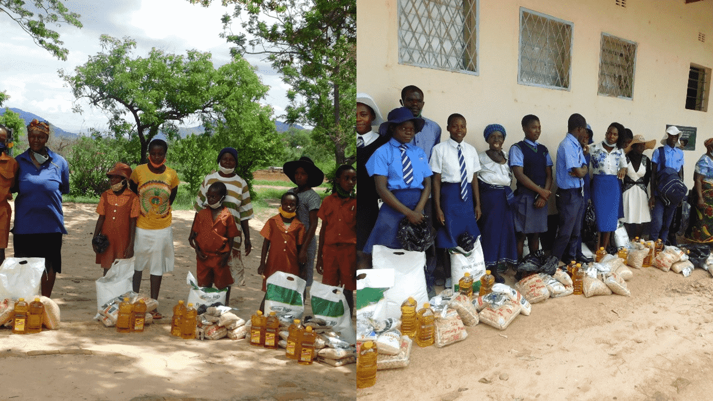

Making dreams come true, one child at a time.
“The greatest gift we can give is the belief in someone's potential. Together, we can transform lives and build a brighter future for all.”
"Children are the future of this
nation and this planet, therefore we should always proctect them, our Elders are the cornerstone of humanity so lets respect them and let them guide us."
-Princess Mhlongo.

Transforming Lives in Umzinto: A Story of Hope and Community.
In the heart of Umzinto, KwaZulu-Natal, a bustling town known for its vibrant community spirit, a significant change was unfolding. On a sunny afternoon, the local community gathered at the central park, their faces reflecting a mix of anticipation and relief. This was not just another day in Umzinto—it was a day of transformation and support.
Princess Cares Foundation had organized a special event to distribute essential food parcels and educational supplies to the residents of Umzinto. As the sun cast its warm glow over the town, families, students, and community members came together, united by a common purpose.
For many in Umzinto, this initiative was a lifeline. Among the crowd were students from nearby schools who eagerly awaited their turn to receive school supplies. These students, many of whom had struggled to keep up with their studies due to a lack of resources, now looked forward to new books, stationery, and learning materials. The smiles on their faces as they received their supplies spoke volumes about the hope and excitement they felt.
At another corner of the park, families lined up to collect food parcels. The parcels, filled with nutritious essentials like rice, beans, and vegetables, were a welcome sight for those who had been facing food insecurity. The community members accepted the packages with gratitude, knowing that this support would provide them with much-needed sustenance.
The event was more than just a distribution; it was a celebration of community resilience and solidarity. Volunteers from Princess Cares Foundation, alongside local supporters, worked tirelessly to ensure that everything went smoothly. Their dedication was evident in the care with which they prepared and handed out the parcels, creating a warm and welcoming atmosphere.
Princess Mhlongo, the founder of Princess Cares Foundation, addressed the crowd with heartfelt words. “Today, we are reminded of the strength and unity that define our community. Every parcel, every book, and every smile represents our commitment to uplifting each other and building a brighter future for all.”
As the sun began to set, casting a golden hue over Umzinto, the event concluded with a sense of accomplishment and hope. The day had brought tangible support to those in need and reinforced the belief that when a community comes together, it can overcome challenges and create lasting change.
In Umzinto, the impact of this day would be felt long after the event had ended. The students would return to their classrooms with renewed enthusiasm, and the families would face the coming days with a little more assurance. Through the collective efforts of the community and the Princess Cares Foundation, Umzinto had once again demonstrated the power of compassion and solidarity.